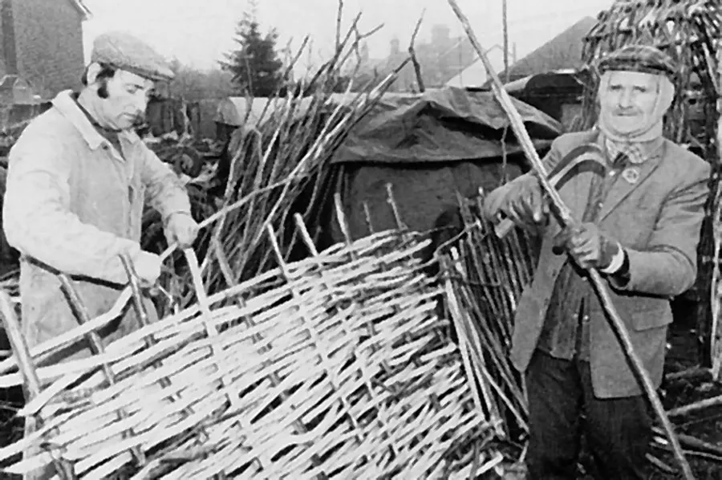
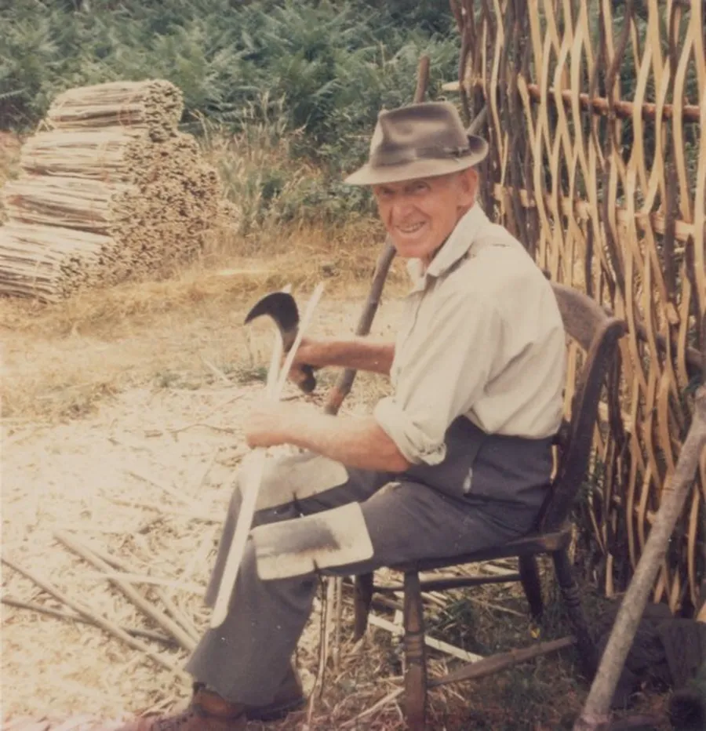
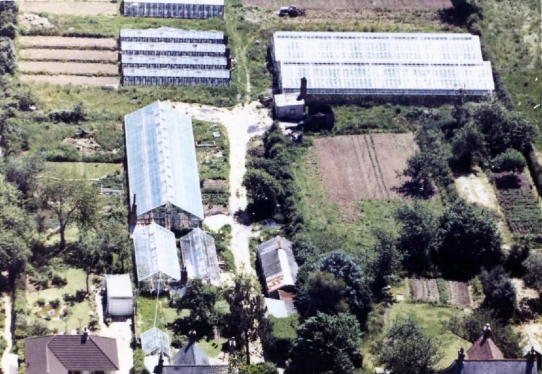
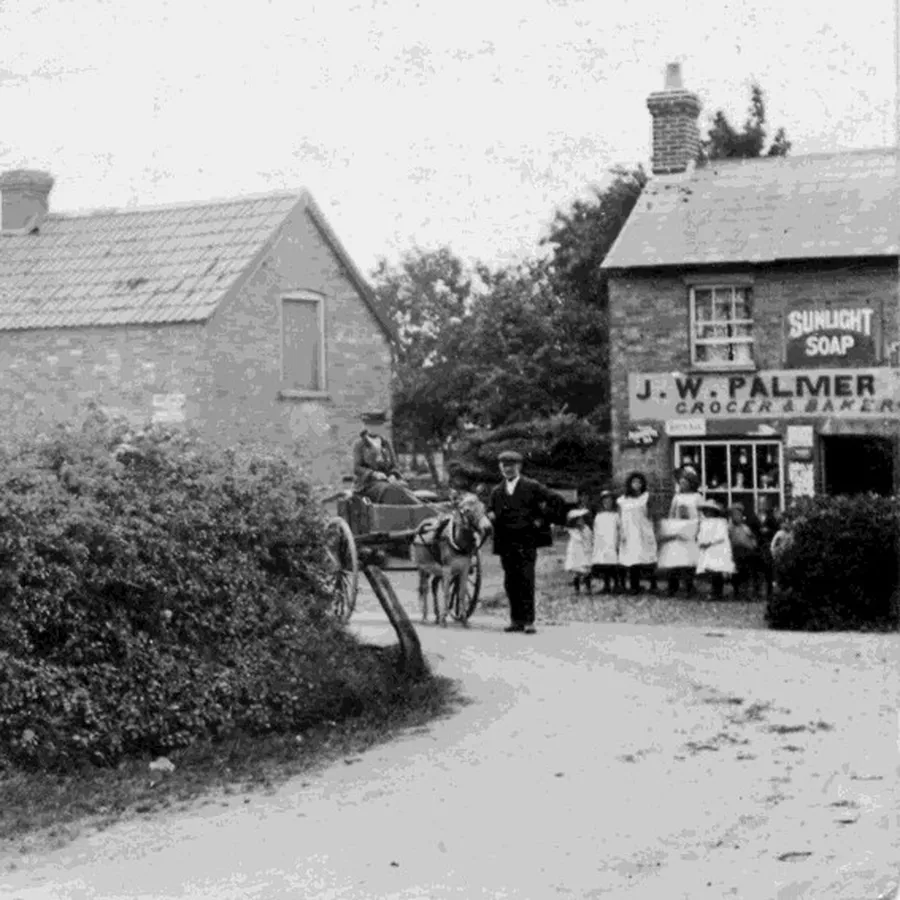
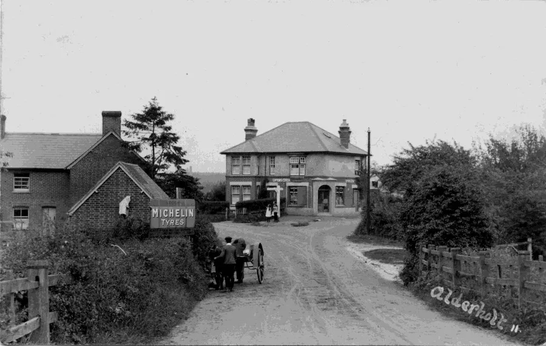
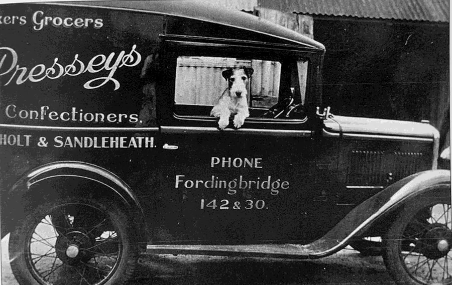
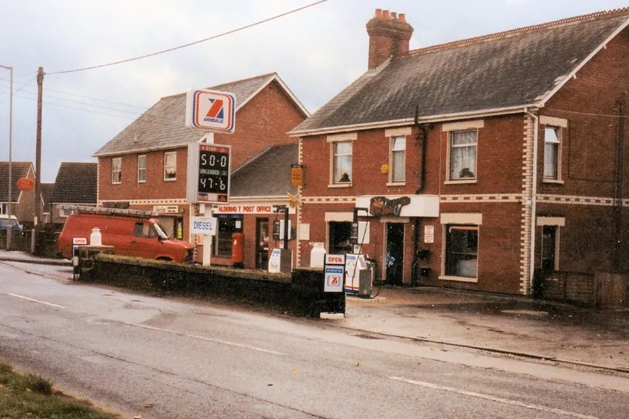
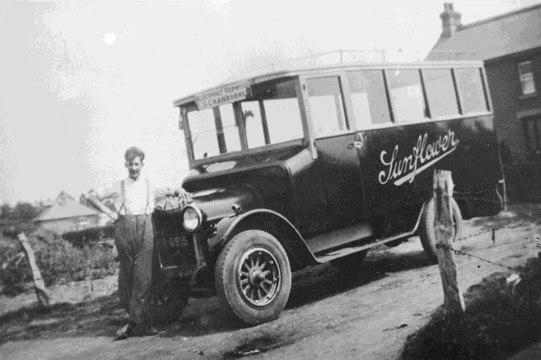
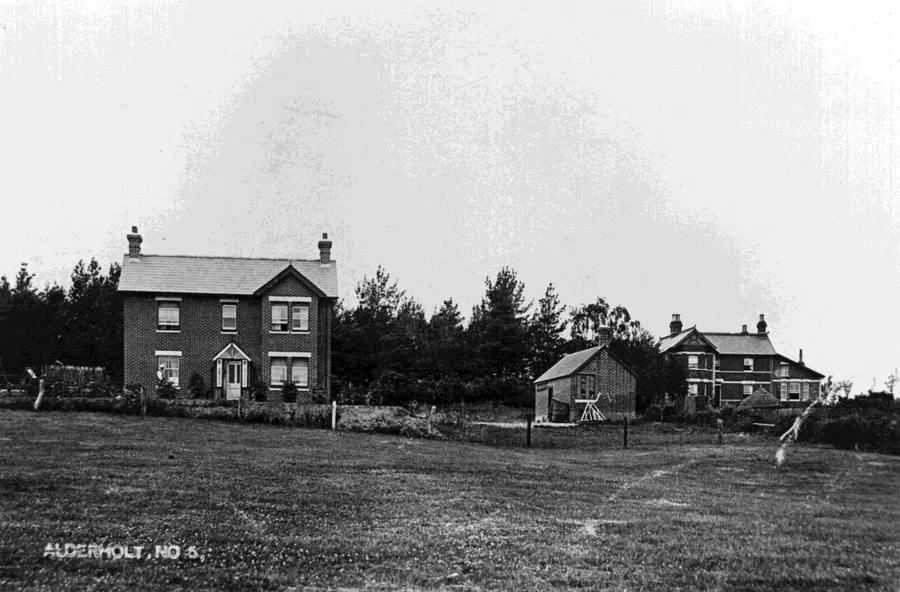

Old Commerce — Part II
by Adrian King

Leonard Lane
A hurdle and spar maker in Hayters Way in the 1940s. His son-in-law Bond continued with the business into the 1980s. Wilfred Foster and Fred Sims were also Hurdle and Spar Makers at Cripplestyle.


Moonacre Restaurant
A restaurant at Presseys Corner owned by Barbara Garnsworthy which occupied the bakery and grocers. It is now a domestic house.
Presseys Nursery
In 1973, Sumach, also known as Station Road Nurseries, was owned by Herbert Pressey. Later Bert Pressey had a swimming pool in one of the greenhouses and on occasions it was used by the Congregational Church for baptisms. In the early 2000s the site occupied by Woodleigh (30 Station Road), Sumach (34 Station Road) and the greenhouses was divided and redeveloped.

The greenhouses were demolished for housing with access from Lime Tree Close and Apple Tree Road on Earlswood. Another dwelling was built in between the original houses as 32 Station Road.
Before it was sold Woodleigh was used as the manse for the Stuckton Group of Congregational Churches.
Presseys Stores and Bakery
Located at Presseys Corner. After 1904 the shop was run by James William Palmer. The Palmers moved to a new shop at Charing Cross in 1915.

Brian Palmer, son of William George Palmer (one of James William Palmer’s sons) told how his father told him
“...how they used to stack the oven with faggots of wood and set fire to it. They then drew out the ashes and in went the bread. The village bakery was a gathering place for the lads on cold winter nights. Dad said that after the fire had burnt out they would draw the ashes and put in the bread to bake. He used to knock back the dough and he said 'No matter how dirty your hands were when you started that job, they were clean when you finished it.' I bet the bread tasted better than the bread we get now though. All this was before and during the Great War of 1914-18. Because Dad was the village baker he was not called up.”
Thomas William Pressey purchased the store in 1926. In 1939 he was recorded as the owner and Leonard Candy the proprietor.

Until it was covered there was a substantial mural on the wall of the bakehouse. The bakehouse and vehicle garages have been demolished in recent years and replaced with a house on the same site.

Mr and Mrs James were the last owners of the business and when the store closed the building became the Moonacre Restaurant.
Thomas William Pressey also had a grocery shop in Sandleheath in what was until recently (28th April 2023) the Post Office and Stores.
Vending Machines
There were vending machines in a bungalow opposite the newsagent and wool shop where you could get cigarettes and bars of chocolate.
Barry Wallis
Barry Wallis was a funeral director at 153 Station Road. He had a workshop and chapel of rest at the junction of Hillbury Road and Station Road.
After his death, the plot was sold to Alderholt Congregational Chapel. The new building is partly built on that land. The workshop was demolished but the chapel of rest remains and is used as a prayer room.
Other Alderholt Enterprises
Meedons Demolition A breakers yard in Station Road in the 1980s.
Sidney Osment He took over Eric Wallis’s milk round.
Palmers Stores A shop at Charing Cross. See also Pressey’s Stores.
Parade Butchers The butchers at the Halt in the 1980s.

David Pattle He was an electrical contractor in Hillbury Road.
Pet Shop Located in Station Road near Down Lodge Close and run by Michael and Jean Cull in the 1980s. Now a private house.
Pinhorns Nursery In Hillbury Road owners Ron and Adrian Pinhorn. Now housing.
D. Philpott A motor engineer in Fordingbridge Road around 1975.
Reginald Ernest Sawyer A boot repairer in Camel Green. (source KA1939*).
Clifford M. Sims A broom maker in Camel Green Road in the 1930s.
Sunflower Coaches A coach hire operation in Hayters Way in the 1940s.

Undertaker Fred Hibberd did undertaking, cabinet making and decorating work.

Eric Wallis A milk dairy in Station Road. Sidney Osment took over the round later.
Peter Wallis He operated a Paraffin Round in the village.
Whites Nursery A nursery in Blackwater Grove run by Stan White which was also a Newsagent.
Help Us Record Alderholt's Commercial History
This completes an incomplete survey of old commerce in the village and there were many more. One may wonder why, despite a population of around 3,000, the village has fewer commercial enterprises than it had in earlier years.
We are keen to preserve the history of every business that has operated in Alderholt, from village shops and farms to tradesmen, workshops and larger enterprises. If you have memories, photographs, documents, advertisements, invoices, letterheads, or any other information about businesses in the village, whether they are already featured or not, we would be delighted to hear from you. Even small details can help build a more complete picture of Alderholt's commercial past. Please get in touch if you can help us add to, correct or expand this record for future generations.
* Date codes FA and NR are from Fordingbridge Almanac and the National Register respectively